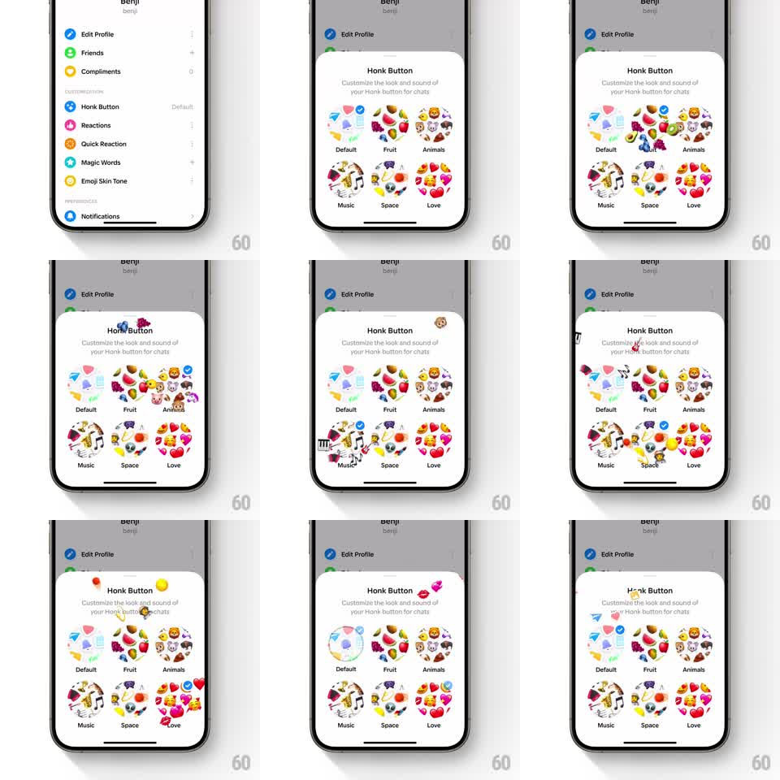

Media
Frame-by-frame

Rebuild this interaction 1:1: Honk's button customizer - in the "Honk Button" sheet, tapping a theme circle pops a representative emoji out of it that floats upward and fades, while a blue check badge lands on the selected theme.

Rebuild this interaction 1:1: Honk's button customizer - in the "Honk Button" sheet, tapping a theme circle pops a representative emoji out of it that floats upward and fades, while a blue check badge lands on the selected theme. ## Integration Integration: stack-agnostic spec - springs given as stiffness/damping, timed motions as duration + curve; map every value to your framework and animation library of choice. ## Scene Settings list behind; the "Honk Button" sheet slides up: title, "Customize the look and sound of your Honk button for chats" subcopy, and six circular theme options in two rows - Default, Fruit, Animals, Music, Space, Love - each a collage circle of its emoji set. The selected option carries a blue checkmark badge at its top-right. ## Motion spec Pattern: emoji pop with badge transfer. - Sheet entrance: slides up over dimmed settings (spring ~300/24, 350ms). - Tap a theme: the circle pops (scale 1 -> 1.08 -> 1, spring ~340/16); a representative emoji (monkey for Animals, piano keys for Music, strawberry for Fruit, lips for Love...) springs out of its top (scale 0 -> 1.2 -> 1, 250ms) and floats upward (translateY -60pt, 900ms, ease-out) while fading (last 400ms), with a slight drift and rotate (+-15deg). - The blue check badge hops from the previous selection to the new one (scale 0 -> 1 spring at the new circle, 200ms; shrink-out at the old, 150ms). - Successive taps on different themes repeat the pop; re-tapping the selected theme just re-fires the emoji. ## Calibration - The popped emoji must match the tapped theme - it is a preview of the pack. - The emoji floats clear of the sheet's title area without colliding with other circles. ## Reduced motion The badge moves with a fade; no emoji pop. ## Don't miss - Only one check badge exists - it transfers, never multiplies. - Theme circles show mini emoji collages; keep their contents recognizable at 56pt.